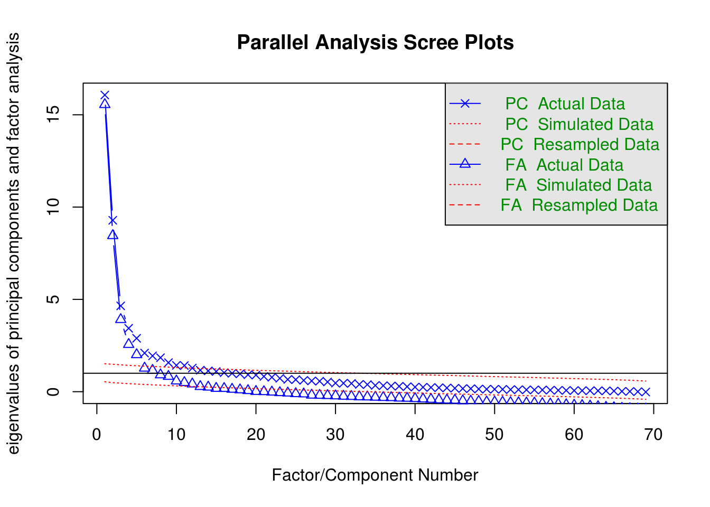
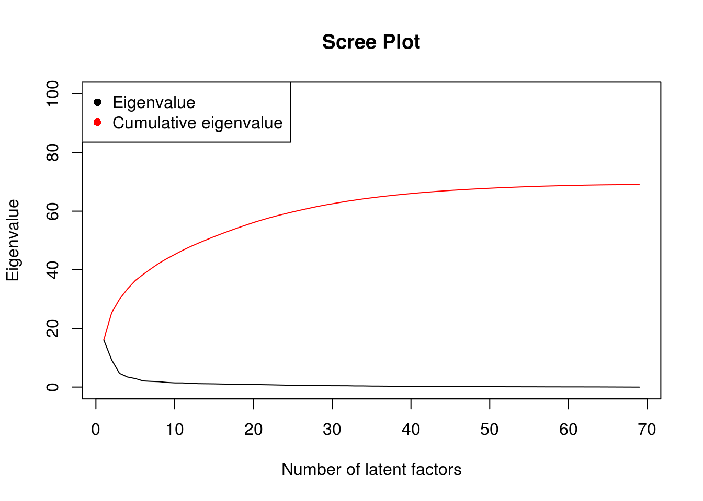
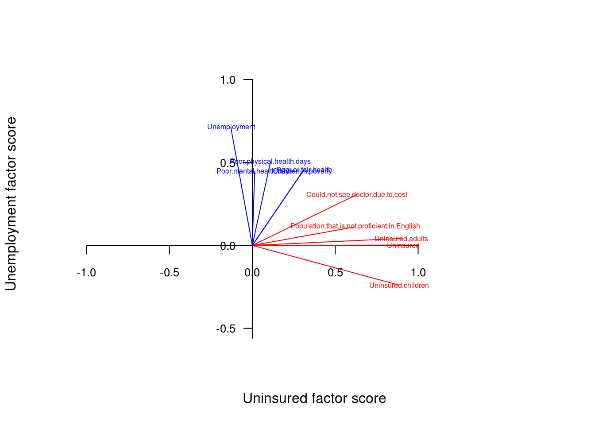
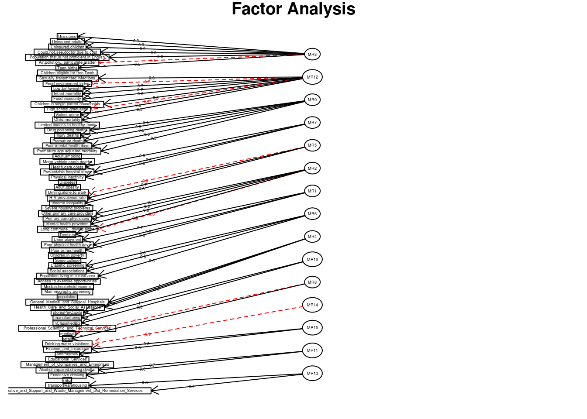

Set paths and load dependencies
## [1] "/mnt/hgfs/projects/insight/models/fa"## Loading required package: psych## Loading objects:
## dsMat
## dsMat_rmColRow## [1] 1109 69Determine number of factors * 3 factors explain 25% variance * 5 factors explain 36% variance * 8 factors explain 52% variance * 15 factors explain 74% variance
tmp=fa.parallel(dsMat_rmColRow,fm="oblimin",fa="both")## factor method not specified correctly, minimum residual (unweighted least squares used## Warning in cor.smooth(R): Matrix was not positive definite, smoothing was
## done## Warning in cor.smooth(R): Matrix was not positive definite, smoothing was
## done## Warning in cor.smooth(r): Matrix was not positive definite, smoothing was
## done## The estimated weights for the factor scores are probably incorrect. Try a different factor extraction method.
## Parallel analysis suggests that the number of factors = 13 and the number of components = 12plot(cumsum(tmp$pc.values),col="red",type="l",
xlab="Number of latent factors",ylab="Eigenvalue",main="Scree Plot",ylim=c(0,100))
points(tmp$pc.values,type="l")
legend("topleft",pch=c(16,16),col=c("black","red"),c("Eigenvalue", "Cumulative eigenvalue"))
View main loadings to determine factor names * PC1: financial access (uninsured, Could.not.see.doctor.due.to.cost, non-eng speaking) * PC2: STI, infant mortality, low birthweight, single parent, Food.insecurity, Food.env * PC3: premature death, injury, OD, motor accidents, smoking, poor health (mental, physical) * PC4: health costs, pvt hosp stays, Physical.inactivity, diabetes * PC5: driving alone to work, HIV, incomeInequality, LongCommute * PC6: pr care providers (pr care, mental, dental), LongCommute * PC7: unemployment, poor health days * PC8: rural, diabetic screening, socialAssoc, exercise facilities * PC9: tertiary care providers (genMed, surg, Health_Care_and_Social_Assistance) * PC10: manufacturing, nBiz, Financial services * PC11: medical rx store type * PC12: water pollution, healthyFood * PC13: fin/prof services * PC14: alcholism, DUI * PC15: other biz (transport/warehousing, remediation)
load(file="FA.RData",verbose=T)## Loading objects:
## mod_fa
## factorScores#mod_fa=fa(dsMat_rmColRow, nfactors=15, rotate="oblimin", missing=T)
#mod_fa # print results
#attributes(mod_fa)
#view the loadings (get the top features contributing to the factors)
#sink("FAloadingsTables.txt")
#for(i in 1:15){
# print(head(mod_fa$loadings[order(abs(mod_fa$loadings[,i]),decreasing=T),c(i,1)],10))
#}
#sink()
#print(mod_fa, digits=2, cutoff=.3, sort=TRUE)#write.table(mod_fa$loadings,file="FAloadings.txt", col.names=NA, quote=F,sep="\t")
#save(mod_fa,file="FA.RData")#attributes(mod_fa)
#factorScores=mod_fa$scores
dim(factorScores) #1109 15## [1] 1109 15#colnames(factorScores)=c("Uninsured","Natal","PrematureDeath","HealthCost","Commute","PrCare","Unemployment","Rural"#,"TertCare","BizAct","MedicalRxStore","Pollution","ProfServices","Alcholism","OtherBiz")
#save(mod_fa,factorScores,file="FA.RData")#png(file="FAloadings.png",width=7,height=7,units="in",res=300,bg="white")
top1=mod_fa$loadings[order(abs(mod_fa$loadings[,1]),decreasing=T)[1:5],c(1,7)]
top2=mod_fa$loadings[order(abs(mod_fa$loadings[,7]),decreasing=T)[1:5],c(1,7)]
#png(file="factorPlot.png",width=5,height=5,units="in",res=300,bg="transparent")
plot(mod_fa$loadings[,c(1,7)],type="n", axes=F,asp=1,xlim=c(-.25,1), ylim=c(-0.5,1),
xlab="Uninsured factor score",ylab="Unemployment factor score")
axis(1,seq(-1,1,len=5),pos=0,cex.axis=0.8)
axis(2,seq(-1,1,len=5),pos=0,las=2,cex.axis=0.8)
text(top1,labels=rownames(top1),cex=.5,col="red")
text(jitter(top2),labels=rownames(top2),cex=.5,col="blue")
segments(rep(0,5),rep(0,5),top1[,1],top1[,2],"red")
segments(rep(0,5),rep(0,5),top2[,1],top2[,2],"blue")
#dev.off()
dimnames(mod_fa$loadings)[[2]]=colnames(factorScores)
#png(file="FAgraph.png",width=11,height=11,units="in",res=300,bg="transparent")
fa.diagram(mod_fa,cut=0.45,e.size=0.02)
#dev.off()